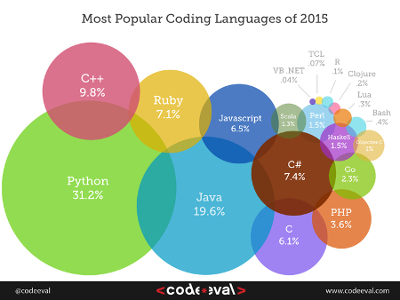

One of the most common questions asked in the programming world, is what language should I learn first. Unless you have a certain task you want to do, Python is a great place to start, very english like language with an extensive library. If you are not sure between Python 2 and Python 3, pick python 2 because most textbooks and tutorials use Python 2. Another language to learn to start off with is HTML, even though is not truly a language, you can embed other languages in it using CSS, JavaScript, PHP, or even create Java applets. Theres no probelm starting learning off C or a languaged based off C like Java. As a high school student Java is a great place to start since AP Computer Science A is based off of this language.
For the python link, they suggest using certain text editor depending what your operating system is, it doesn't make a difference if you use their suggested text editor or not, other than the color in the pictures should be same in your code, which could be helpful.
Here is a of links of resources to use
Using these links can be very helpful, there are plenty of other websites to chose from to help you learn a certain language. We highly suggest you also buy a text book for that language if you really want to learn it thoroughly. To find a quality books, simply google the language you want to learn, and links to textbooks should appear. Look at the reviews and see which one fits you the best.